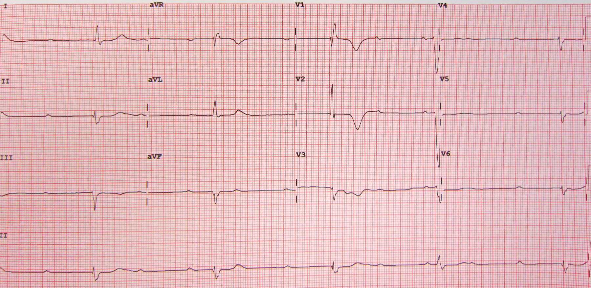

Fenitoína: 20 mg/kg, 50 mg/min, coração primeiro
Dose · velocidade · conta · onset · cardiotoxicidade · disponibilidade BR
1. O grande segundo prático
O grande segundo medicamento de escolha prática é a fenitoína intravenosa.
2. Dose: 20 mg/kg
Dose de fenitoína: 20 mg/kg. Existe literatura que fala em dose até 30 mg/kg — na prova e no dia a dia usa-se 20 mg/kg.
3. Velocidade: ≤ 50 mg/min e a conta
Velocidade máxima de infusão: 50 mg/min. Conta didática: paciente de 50 kg → 50 × 20 = 1000 mg de fenitoína. 1000 mg ÷ 50 mg/min = 20 minutos de infusão.
🧮 Calculadora PHT
Em idosos / DRC / cardiopata, protocolos BR podem reduzir a velocidade (ex.: 20–25 mg/min). O teto 50 permanece o número de prova/padrão.
Dualidade honesta: literatura pode citar faixas mais altas (até ~30 mg/kg); prova e prática institucional BR cravam 20 mg/kg.
4. Onset: não é tão rápido quanto o benzo
Dose alta hipersatura o metabolismo e eleva o nível sérico para atuação central — mas o onset não é tão rápido quanto o do benzo. Efeito começa em torno de 10 a 20 minutos — efeito cumulativo.
5. Coração antes do cérebro
Deve-se infundir lento por causa do coração. Fenitoína é bloqueador do canal de sódio. Se infunde rápido → arritmia cardíaca — pode matar o paciente. Máxima da fenitoína: machuca o coração; chega primeiro no coração e só depois no cérebro — por isso entra devagar. Mesmo devagar, a dose total é bastante alta. Dose, velocidade e cardiotoxicidade da fenitoína caem muito em prova.
6. Alternativas e a prática BR
Alternativas citadas: ácido valproico EV e levetiracetam EV. Ácido valproico venoso, na fala da fonte, parou de ser fabricado no Brasil — não se encontra. Levetiracetam EV não está disponível em todo serviço. Na prática, o que se acaba fazendo é a fenitoína, na dose e velocidade corretas por causa do coração.
Implicação prática da fonte (PHT como 2ª linha real) alinhada a protocolos BR institucionais consultados. A formulação categórica "parou de ser fabricado / não se encontra" não fechou com fonte ANVISA inequívoca no laudo. No material: preferir "disponibilidade limitada / ausente em muitos protocolos de 2ª linha" ao lado do canon prático PHT — sem apagar a voz da fonte nem inventar descontinuação absoluta.

Infusão rápida mata pelo coração; dose/velocidade caem muito em prova.
2º prático = fenitoína IV 20 mg/kg @ ≤50 mg/min. Onset 10–20 min cumulativo. Machuca o coração se rápido. VPA EV / LEV EV: limitações BR → na prática PHT.